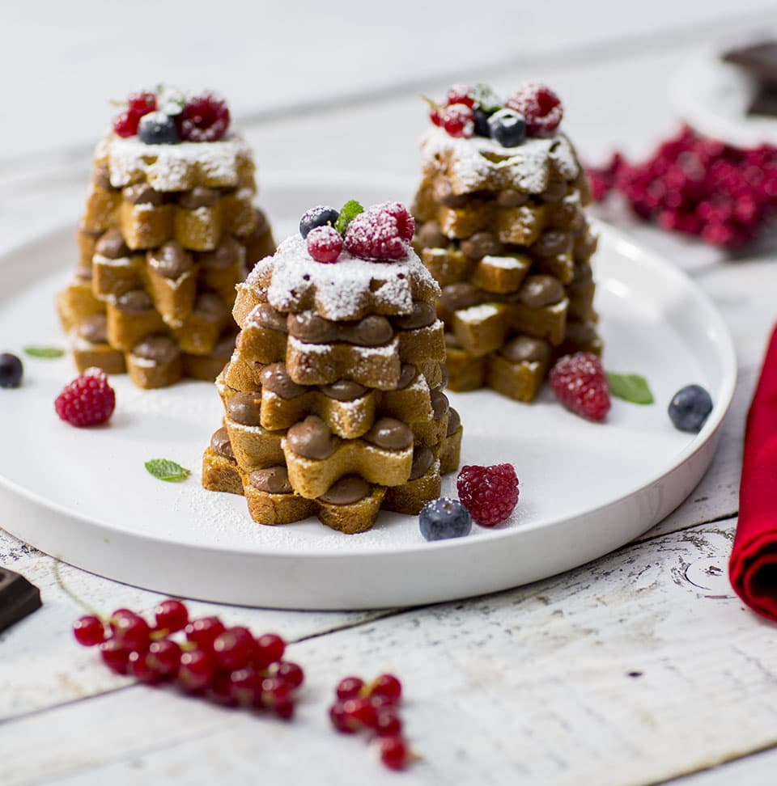

Gli alberelli di pandoro con crema pasticcera e ribes sono degli sfiziosi e allegri dessert da servire durante le feste di Natale, come fine pasto o come merenda.
I pandorini vengono tagliati a fette e ricomposti una fetta sull'altra a mò di alberello natalizio, con una farcitura tra uno strato e un altro di golosa crema pasticcera alla vaniglia. La decorazione finale prevede poi ciuffi di crema pasticcera e chicchi di melagrana, ribes e piccoli mirtilli ai lati, proprio come se fossere delle palline di Natale. Preparare gli alberelli è molto facile e veloce, vi basterà realizzare la crema pasticcera prima e poi assemblarli all'ultimo momento! Gli alberelli di pandoro con crema pasticcera e ribes sono dessert particolarmente invitante, bello da vedere e costituiscono un’ottima alternativa alla classica fetta di pandoro!